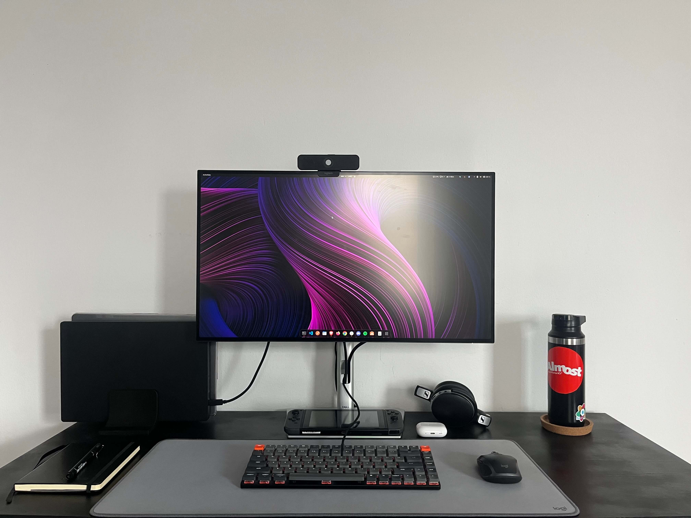

Hey folks, I've always been a person who likes cool setups with nice devices and apps that allow people to create a productive and relaxing environment. After spending years reading these kinds of posts and seeing them on other personal websites, I asked myself, "Why don't I create a page with my setup on my first personal website?" Anyway, this is the answer. I hope this can be useful for you!
Devices
-
TUXEDO InfinityBook Pro 14 - 6Gen: I prefer to have a personal laptop for non-work related tasks, and since I'm a fan of Linux, I chose to purchase a laptop from a company that specializes in Linux systems. Although I had hoped to get one from System76, I ended up selecting one from Tuxedo (A company from Germany) and I don't regret it at all, the quality of the laptop is very good and you have a lot of freedom of customization on the site, here's the configuration of mine:
- Display: 3k 90Hz (2880 x 1800)
- CPU: 11th Gen Intel i7-11370H
- Memory: 32Gb
- Keyboard: ANSI layout (with backlight)
-
MacBook Pro 14" M1 Pro: This is my work laptop. The M1 Pro processor is incredibly fast, what I like most about Apple laptops is the screen, keyboard, and usually the battery is decent to be able to work or use unplugged for a while.
-
iPhone 13: This is my first iPhone, my last phone was a OnePlus 6T that I loved, it worked great, was fast, flexible, and very reliable, however, I was a little frustrated with the camera, and after a few years of use I ended up migrating to the Apple phone, and I can say that I like and dislike the iPhone if for some reason I buy a portable camera like the Fujifilm x-e4 I'll probably go back to the OnePlus or Google Pixel.
-
Kindle: I'm always carrying it with me everywhere and lately I'm taking advantage of it a lot to read on the train or in a few minutes of break, I have a goal to read more books so it will be my companion for that purpose.
-
Keychron K3: This is my first mechanical keyboard, and I really didn't know that I would like it so much, I think it's a good indication for anyone who wants to enter this world.. I already have my eye on others haha
-
Logitech MX Anywhere 2S: I really like this mouse because it's small and super portable, I also like the shortcuts, especially the scroll button ones since I can push to the right and configure this to switch workspaces on my MacBook.
-
Logitech C925E: This is a webcam I bought in Brazil and I just can't see myself buying another one for a long time, it works great for everyday use.
-
Dell U2722DE 27": This monitor is on the list of my latest acquisitions, I'm on the single monitor team because it makes me focus better on the things I'm doing at that moment, so I chose this monitor for a few reasons, which are:
- I never had problems with Dell monitors
- This monitor's connections are incredible and it can charge your laptop at 90w (Exactly what I was wanting)
- In my opinion, its size is the ideal size to not need a secondary monitor
-
SIHOO Ergonomic Desk Chair: I don't have much to say here, I tried to find a cheap and comfortable chair, luckily I was able to test this chair a little earlier and it pleased me, so far it's been a good experience.
-
Sennheiser HD 4.50 BTNC: I've been using this headphone for so many years, I don't even remember when I bought it, I believe it was in mid-2018 or earlier, I've always really liked headphones, I've had a few AKG, Sony, etc... I like the music signature from Sennheiser, unfortunately, the NC leaves something to be desired, but it's totally understandable as it's an "older" phone, I'm planning to get a Sony WF-1000XM4.
-
AirPods Pro - 2Gen: I frequently use public transport, ride a bike, or skateboard, so I purchased these headphones specifically for those activities. I'm impressed with the quality of the headphones and how well they integrate with Apple devices. Everything works seamlessly.
-
iPad 7th Gen + Apple Pencil: Since I was a kid I liked cartoons, anime and any kind of visual art and for these reasons I always had a little affinity for drawing so I basically use this iPad for that, I still plan to invest more time and effort in it and maybe create a section on this site with my drawings.
-
Nintendo Switch: I've always been a PlayStation fan haha and when I bought the switch I thought I would end up getting bored or the games wouldn't please me but it's amazing how Nintendo games are for all ages and super fun I would say this console it is the best console to play with friends and with your partner.
Apps
I use a variety of apps to make my work and personal life more productive and efficient. Here are some of my favorites:
-
VSCode is my favorite text editor. I currently use moonlight II as my theme and JetBrains Mono as my main font.
-
Iterm2/Terminal: Basically I use iterm2 at work and the default Gnome terminal on my personal laptop, in both I'm using ZSH as shell with spaceship theme and the following plugins:
-
Brave is my main browser. I do try out other browsers from time to time, but I always find myself returning to Brave. It just seems to work best for me.
-
Bitwarden is my password manager. I can't imagine living without one at this point.
-
Grammarly: As a non-native English speaker, I find Grammarly to be incredibly helpful. It really helps me improve my writing skills.
-
Notion is where I keep medium and long-term plans, such as trips, expenses, and work projects.
-
Obsidian is my latest addition. I use it to track my daily tasks, studies, and other simple things.
That's all for now, I may have missed something but I'll continue to add and update this list over time. Thank you for reading this far. I hope you found this information helpful.
Nowadays, my setup looks like this:
